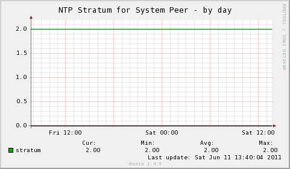
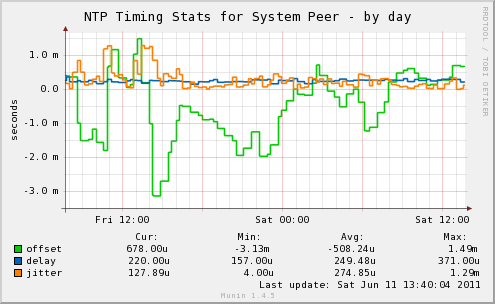

The multigraph plugin implements the following graphs for monitoring time synchronization status relative to active synchronization peer:
The plugin permits monitoring the stratum of the active peer and the estimated offset, delay and jitter.
The multigraph plugin implements the following graphs for comparing the synchronization status of multiple remote hosts:
The list of remote hosts to be monitored is passed in the ntphosts environment variable.
The multigraph plugin implements the following graphs for monitoring the synchronization status of a single remote host:
|  |  |
| Variable | Description |
|---|---|
| ntphosts | Used only by ntphostoffsets plugin, is a required configuration for this plugin. Must contain a comma separated list of IP addresses of hosts to be monitored. |
| include_graphs | Comma separated list of enabled graphs. (All graphs enabled by default.) |
| exclude_graphs | Comma separated list of disabled graphs. |